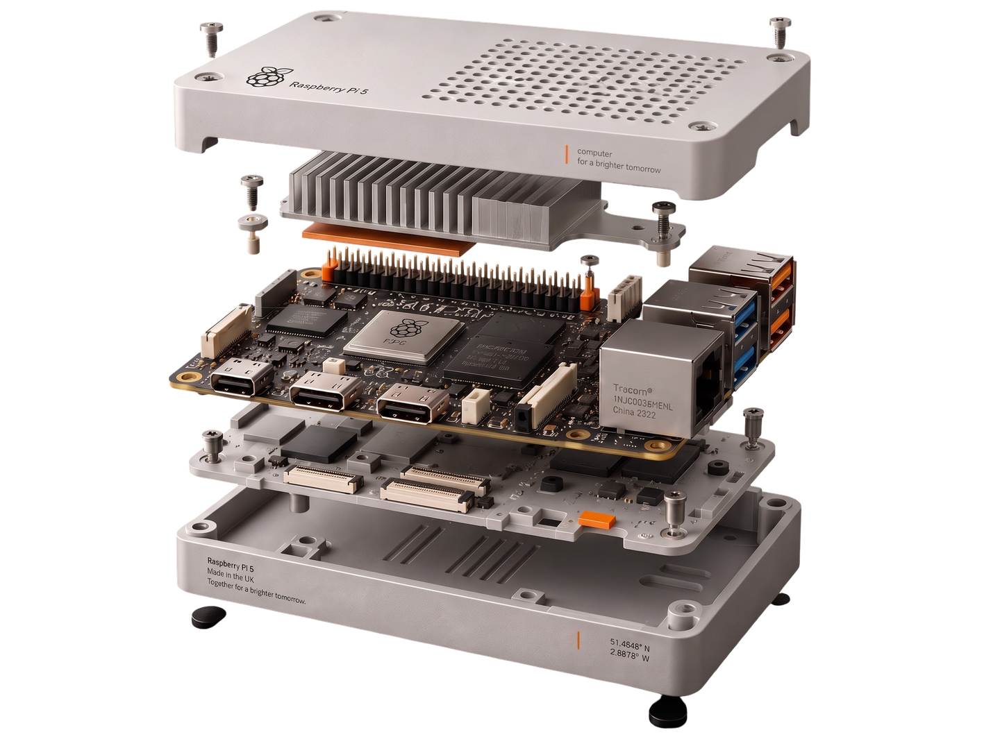

Project 01 — Jan 2025 → Mar 2025
CableScope
AI-Powered Cable Fault Detection & Diagnostics System
STM32 signal generation and acquisition fused with a Raspberry Pi for real-time processing, visualization and ML-driven fault location. Time Domain Reflectometry signals validated through custom test cases; machine learning on acquisition data automates diagnosis and cuts troubleshooting time significantly.
